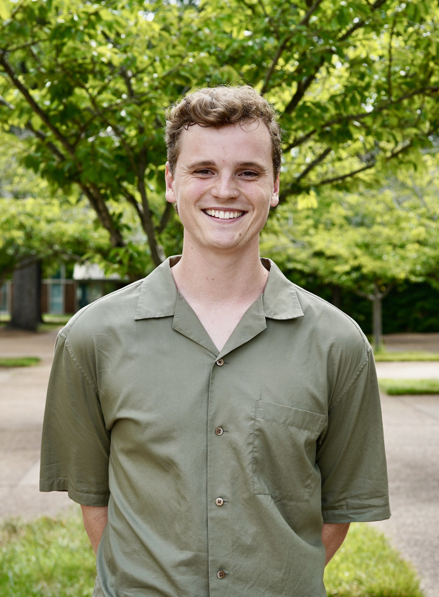

I am a neuroscience researcher developing flexible neural interfaces for stable electrophysiology and optogenetics in behaving systems, with a focus on nonhuman primates. My work integrates microfabrication, implantation strategy, and systems neuroscience to build tools for studying how cortical circuits regulate physiological state.
I am a native Tennessean and have spent most of my academic training in the state. As an undergraduate at the University of Tennessee, Knoxville, I became interested in how neural activity relates to behavior and physiology, working on problems ranging from opioid-induced respiratory depression in mice to materials development for biomedical devices and optical coatings. These experiences shaped my current focus on developing neural technologies that can be deployed in complex, behaving systems.
I am currently a PhD student in Biomedical Engineering at Vanderbilt University and a member of the Gonzales Lab. My research focuses on the design, fabrication, and implantation of flexible microelectrodes for use in nonhuman primates, with the goal of enabling stable, high-density neural recordings during behavior.